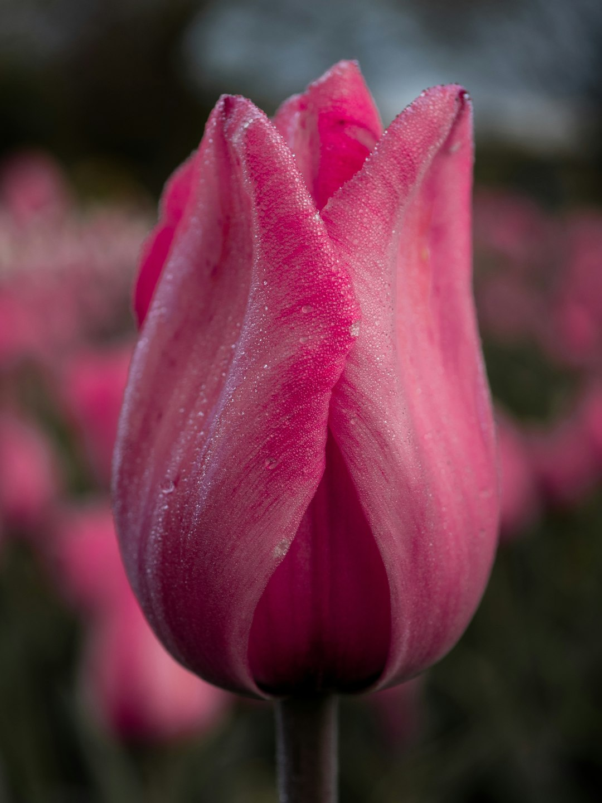

15
Лилейных
80+
Видов
> 10 000
Cортов
Внутри одного вида растений могут существовать группы, которые отличаются отдельными признаками. Такие различия помогают учёным изучать разнообразие растений и их классификацию.
Разные формы тюльпанов могут отличаться:
Важно отметить, что не каждое такое отличие означает существование отдельного подвида или разновидности.
Разнообразие тюльпанов формировалось в течение длительного времени. На него влияли наследственные особенности, генетические изменения и приспособление растений к различным условиям окружающей среды. Благодаря этому внутри рода Tulipa существует большое количество видов и форм.
Для классификации тюльпанов специалисты используют несколько методов:
Разнообразие тюльпанов формировалось в течение длительного времени. На него влияли наследственные особенности, генетические изменения и приспособление растений к различным условиям окружающей среды. Благодаря этому внутри рода Tulipa существует большое количество видов и форм.